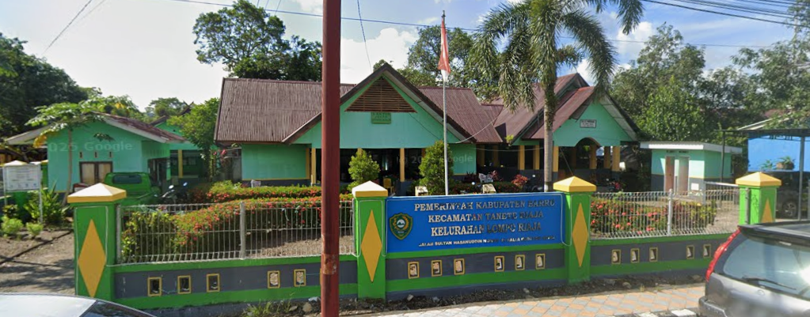
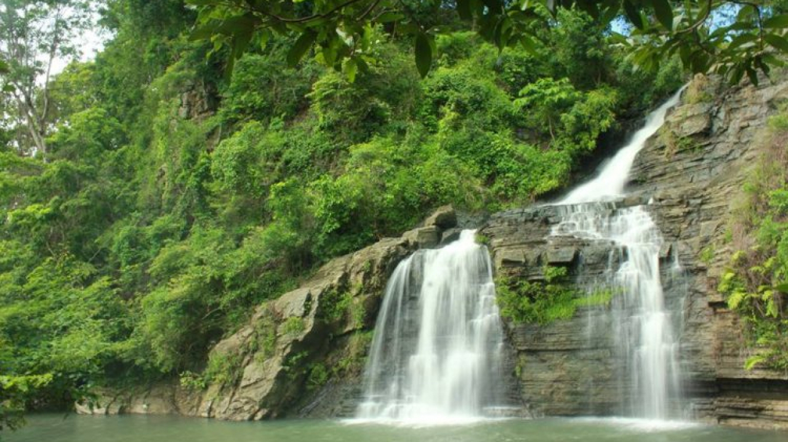
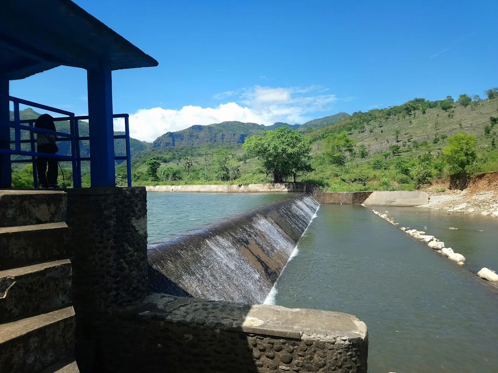

Kelurahan Lompo Riaja
Kec. Tanete Riaja — Kab. Barru

Informasi kependudukan, layanan administrasi, dan kegiatan warga — semua dalam satu portal digital Kelurahan Lompo Riaja, Kecamatan Tanete Riaja, Kabupaten Barru.
“Mewujudkan Lompo Riaja yang berkeadilan, maju berkelanjutan, dan sejahtera lebih cepat.”
Assalamu'alaikum warahmatullahi wabarakatuh.
Selamat datang di portal resmi Kelurahan Lompo Riaja. Website ini kami hadirkan sebagai wujud komitmen dalam menghadirkan pelayanan yang terbuka, cepat, dan mudah diakses oleh seluruh warga.
Sebagai bagian dari Kabupaten Barru, kami berkomitmen mendukung visi "Barru Berkeadilan, Maju Berkelanjutan, dan Sejahtera Lebih Cepat", dengan menghadirkan tata kelola pemerintahan yang baik, transparan, dan bernafaskan keagamaan di tingkat kelurahan.
Melalui website ini, kami berharap warga dapat lebih mudah memperoleh informasi mengenai layanan administrasi, kegiatan kelurahan, serta perkembangan pembangunan di wilayah Lompo Riaja. Semoga portal digital ini membawa manfaat nyata bagi kita semua.
Wassalamu'alaikum warahmatullahi wabarakatuh.
Diselaraskan dengan Visi Misi Kabupaten Barru di bawah kepemimpinan Bupati Andi Ina Kartika Sari dan Wakil Bupati Dr. Ir. Abustan A. Bintang.
Menuju masyarakat Kelurahan Lompo Riaja yang mandiri, tertib administrasi, dan berdaya saing, selaras dengan arah pembangunan Kabupaten Barru.
Kelurahan Lompo Riaja terbentuk pada tahun 1955, awalnya berstatus sebagai Desa dengan Kepala Desa pertama H. Tjakke Husain Dg. Malinta, yang menjabat hingga tahun 1980. Pada masa awal pembentukannya, wilayah ini mengalami pembangunan infrastruktur pertanian penting, di antaranya bendungan irigasi untuk pertanian Jalanru pada tahun 1965 dan jaringan irigasi Akkajangnge pada tahun 1968.
Seiring waktu, status wilayah ini berubah menjadi Kelurahan, dengan pergantian kepemimpinan Lurah dari masa ke masa: Mustakim Pannugu, BSW (2007–2009), Aristo Shiddiq, SH., MH. (2009–2010), Sulaeman, S.IP. (2010–2018), Drs. H. Syarifuddin T. (2018–2021), hingga saat ini dijabat oleh Fatahuddin, S.Sos.(2025-Sekarang).
Kini, Kelurahan Lompo Riaja berkedudukan sebagai pusat pemerintahan sekaligus ibu kota Kecamatan Tanete Riaja, Kabupaten Barru, Provinsi Sulawesi Selatan.
Kelurahan Lompo Riaja menyediakan 16 jenis layanan administrasi. Datang langsung ke kantor kelurahan pada jam layanan, atau cek dulu syarat dan prosedurnya di halaman Layanan.
Keterangan tempat tinggal untuk keperluan administrasi perbankan atau pekerjaan.
Legalitas usaha untuk keperluan permodalan atau kemitraan bisnis warga.
Keterangan kelahiran sebagai dasar pengurusan akta ke instansi terkait.
Lengkap dengan syarat dan tahapan tiap layanan.
Lihat Semua 16 Layanan →Pengaduan, saran, dan masukan dapat disampaikan melalui kotak pengaduan kantor kelurahan, WhatsApp 0852-1531-3872, email lomporiajatapeduli@gmail.com, atau kanal SP4N-LAPOR di www.lapor.go.id.
Beberapa lokasi alam dan situs bersejarah di wilayah kelurahan yang dapat dikunjungi warga maupun wisatawan.

Bongkahan batu besar berbentuk menyerupai perahu, dikelilingi tebing batu dan aliran sungai jernih.
Info lengkap →
Air terjun setinggi ± 25 meter di Dusun Wae Sae, dikelilingi pemandangan terasering sawah.
Info lengkap →
Bendungan irigasi bersejarah sejak 1965, menjadi bagian penting pertanian warga Lompo Riaja.
Info lengkap →